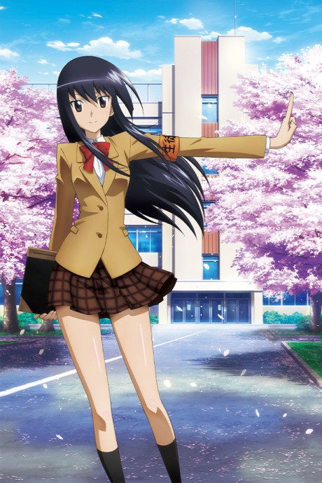
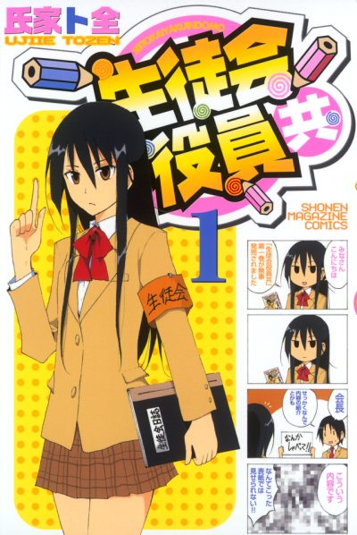
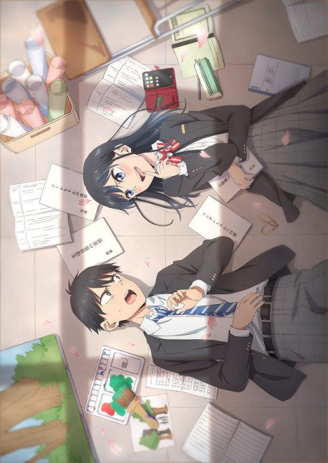
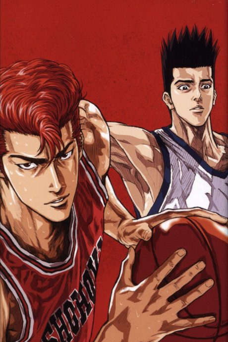
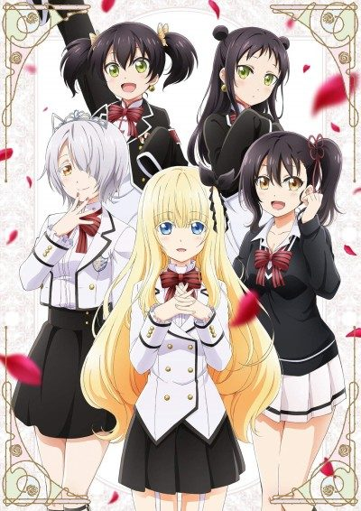
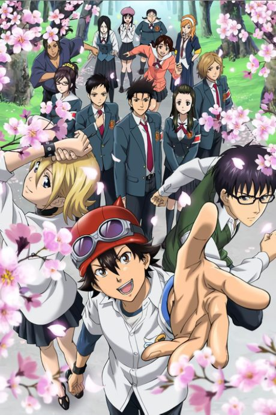

Seitokai Yakuindomo
生徒会役員共
Tsuda joins the student council of a former girls' school, where the girls love to make dirty jokes.
We haven't found where the anime ends in the manga yet.
7.3AniList score
—Animeter, no votes yet
26episodes, 2 seasons
Rate it or report where you stopped
2 seasons, 26 episodes
In airing order. Episode numbers on this site count straight through every season, so season 2 starts at episode 14.
1
2010 · TV
Seitokai Yakuindomo
Episodes1–1313 ep
2
2014 · TV
Seitokai Yakuindomo Season 2
Episodes14–2613 ep
Films, OVAs and specials
Not counted in the episode numbers above.
·
2011 · OVA
Seitokai Yakuindomo OVA
·
2014 · OVA
Seitokai Yakuindomo Season 2 OVA
Sources: AniList
More like Seitokai Yakuindomo

Manga Ch. 667.6 Done8.1
Done8.1
 Unclear8.3
Unclear8.3
 Manga Ch. 1148.1
Manga Ch. 1148.1

Manga Ch. 1988.3
Manga Ch. 197.3 Done7.9
Done7.9
 Manga Vol. 47.5
Manga Vol. 47.5

Manga Ch. 1837.8 Manga Vol. 47.5
Manga Vol. 47.5
 Manga Ch. 1528.3
Manga Ch. 1528.3
 Manga Ch. 17.4
Manga Ch. 17.4